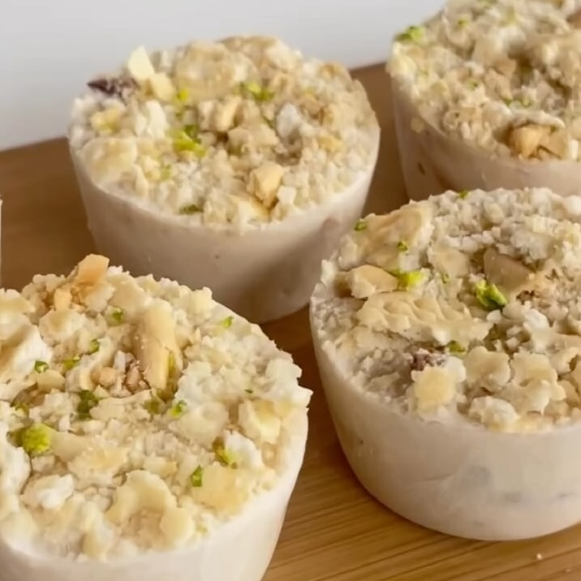

Muffins de Pie de Limón
Ingredientes:
- 1 tz de yogurt griego
- 3 limones (zumo)
- 1 cda de esencia de vainilla
- 20gr de nueces en trocitos
- 4 galletas maría (sin gluten)
- Stevia al gusto (opcional)
Instrucciones:
- Mezclar ingredientes.
- Llevarlo a congeladora por 1 hora